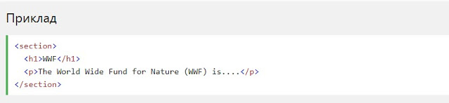
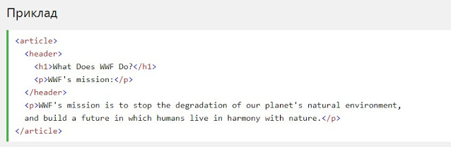
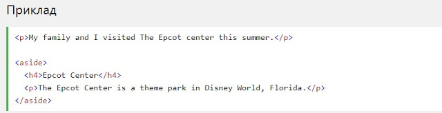
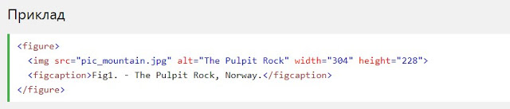

HTML5 Семантичні елементи
Семантичний елемент чітко описує його значення як для браузера, так і для розробника.
Приклади не семантичних елементів: <div> і <span> - нічого не говорить про його вміст.
Приклади семантичних елементів: <form>, <table> і <article>- чітко визначає його зміст.
Підтримка браузерів


Семантичні елементи HTML5 підтримуються у всіх сучасних браузерах.
Крім того, ви можете "навчити" старих браузерів, як обробляти "невідомі елементи".
Прочитайте про це в підтримці браузера HTML5.
Нові семантичні елементи в HTML5
Багато веб-вузли містять HTML-код, наприклад: <div ID = "NAV"> <div class = "заголовок"> <div ID = "нижній колонтитул"> для позначення навігації, верхнього і нижнього колонтитулів.
HTML5 пропонує нові семантичні елементи для визначення різних частин веб-сторінки:
- <article>
- <aside>
- <details>
- <figcaption>
- <figure>
- <footer>
- <header>
- <main>
- <mark>
- <nav>
- <section>
- <summary>
- <time>
HTML5 <section> елемент
Елемент <section>визначає розділ в документі.
Згідно з документацією в3к'с HTML5: "розділ представляє собою тематичну угруповання контенту, зазвичай з заголовком".
Домашня сторінка зазвичай може бути розділена на розділи для ознайомлення, змісту і контактної інформації.
HTML5 <article> елемент
Елемент <article>визначає незалежний, автономний вміст.
Стаття повинна мати сенс самостійно, і вона повинна мати можливість читати його незалежно від іншої частини веб-сайту.
Приклади того, де можна використовувати елемент <article>:
- Повідомлення на форумі
- блозі
- Газетна стаття
Вкладення <article> в <section> або навпаки?
Елемент <article>визначає незалежне, автономне вміст.
Елемент <section>визначає розділ в документі.
Чи можемо ми використовувати визначення, щоб вирішити, як вкладати ці елементи? Ні, ми не можемо!
Таким чином, в Інтернеті ви знайдете HTML-сторінки з <section>елементами, що містять елементи <article>, і <article>елементи, що містять <section>елементи.
Ви також знайдете сторінки з елементами <section>, що містять елементи <section>, і <article>елементи, що містять <article>елементи.
HTML5 <header> елемент
Елемент <header>задає заголовок для документа або розділу.
Елемент <header>повинен використовуватися в якості контейнера для вступного змісту.
В одному документі може бути кілька елементів <header>.
У наступному прикладі визначається заголовок для статті:
HTML5 <aside> елемент
Зміст <aside>має бути пов'язане з навколишнім вмістом.
HTML5 & <figure> і <figcaption> елементи
Метою малюнка є додавання візуального пояснення до зображення.
У HTML5 зображення і заголовок можуть бути згруповані разом в елементі <figure>:
Елемент <img>визначає зображення, елемент <figcaption>визначає заголовок.